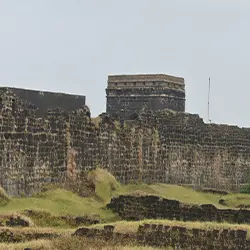
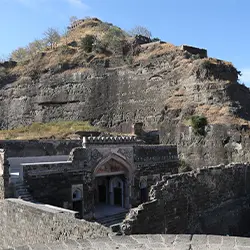
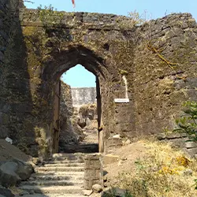
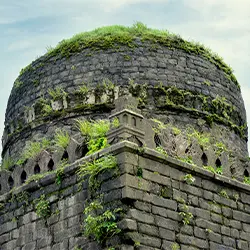
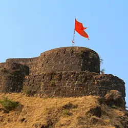
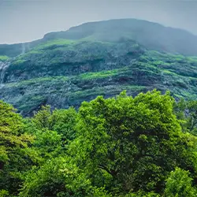
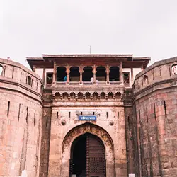
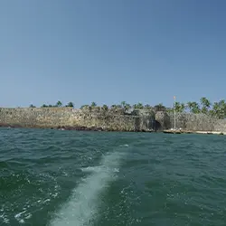

Indian Tourism
Home | Travel | Contact

1.Raigad Fort
Raigad Fort is one of the most important forts in the history of Marathas, being the first capital of independent Marathi kingdom or “Hindavi Swarajya”. Graded as the most secured and most appropriate location by the King himself, the fort stands proudly showing the strength of the Maratha Empire. Raigad fort is situated 25 km north of the modern day Mahad town. Being situated comparatively near to the sea, with Mahad being in reach, and at same distance from Mumbai, Pune and Satara, Raigad enjoyed a strategic position. Moreover, it is an important link between the Deccan plateau and the coastal Maharashtra. Raigad is well surrounded by mountains and was considered secured. The fort is surrounded on its north and east by Kaal River, and Gandhari River flows from its west side. Fort Lingana is situated to the east side and Kokandiva to the north. If the skies are clear, we can see Rajgad-Torna on the east and Pratapgad, Vasota and Makarandagad on the south. Raigad was known as the mountain of “Rairi” before it was captured by Shivaji Maharaj. Due to its impregnability, Raigad was known as “Gibraltar of East”. In the 16th century, when this was not developed as a fort, it was called by local people as “Rashivata” and “Tanas”. Due to its shape of a tall oil lamp tower, it was also called as “Nandadeep”. The fort was called by 15 different names by different people at different times – Raigad, Rairi, Islamgad, Nandadeep, Jambudweep, Tanas, Rashivata, Badenur, Raigiri, Rajgiri, Bhivgad, Reddi, Shivlanka, Rahir and Gibraltar of the east. The fort was initially used to keep prisoners during the Nizamshahi rule. It was then ruled by the More clan of the Javli region. On 6th April 1656, Shivaji Maharaj besieged Rairi and captured it in May. The then Subhedar of Kalyan was transporting the treasure of Adilshah to Bijapur, which was raided by Marathas and utilized to fortify Raigad. It is mentioned in “Sabhasad Bakhar” how Shivaji Maharaj selected the fort as the first capital..
Raigad Fort is one of the most important forts in the history of Marathas, being the first capital of independent Marathi kingdom or “Hindavi Swarajya”. Graded as the most secured and most appropriate location by the King himself, the fort stands proudly showing the strength of the Maratha Empire. Raigad fort is situated 25 km north of the modern day Mahad town. Being situated comparatively near to the sea, with Mahad being in reach, and at same distance from Mumbai, Pune and Satara, Raigad enjoyed a strategic position. Moreover, it is an important link between the Deccan plateau and the coastal Maharashtra. Raigad is well surrounded by mountains and was considered secured. The fort is surrounded on its north and east by Kaal River, and Gandhari River flows from its west side. Fort Lingana is situated to the east side and Kokandiva to the north. If the skies are clear, we can see Rajgad-Torna on the east and Pratapgad, Vasota and Makarandagad on the south. Raigad was known as the mountain of “Rairi” before it was captured by Shivaji Maharaj. Due to its impregnability, Raigad was known as “Gibraltar of East”. In the 16th century, when this was not developed as a fort, it was called by local people as “Rashivata” and “Tanas”. Due to its shape of a tall oil lamp tower, it was also called as “Nandadeep”. The fort was called by 15 different names by different people at different times – Raigad, Rairi, Islamgad, Nandadeep, Jambudweep, Tanas, Rashivata, Badenur, Raigiri, Rajgiri, Bhivgad, Reddi, Shivlanka, Rahir and Gibraltar of the east. The fort was initially used to keep prisoners during the Nizamshahi rule. It was then ruled by the More clan of the Javli region. On 6th April 1656, Shivaji Maharaj besieged Rairi and captured it in May. The then Subhedar of Kalyan was transporting the treasure of Adilshah to Bijapur, which was raided by Marathas and utilized to fortify Raigad. It is mentioned in “Sabhasad Bakhar” how Shivaji Maharaj selected the fort as the first capital..

2.Daulatabad Fort
This fort was built by the Yadava dynasty in 1187 and was known as Deogiri. When Muhammad Tughlak ascended the Delhi throne, he was so taken by the fortress that he decided to move his court and capital there, renaming it Daulatabad, "the City of Fortune". He ordered the entire population of Delhi to move out en masse to the new capital. Some of the prominent structures within the fort complex include the Mahakot which comprises four distinct lines of walls with 54 bastions that surround the fort for a length of nearly 5 kilometres. The walls are between 6 to 9 feet thick and 18 to 27 feet high with ammunition depots and granaries built along the interiors. Another interesting spot is the Hathi Haud a gigantic water tank admeasuring 38 x 38 x 6.6 meters with a capacity of about 10,000 cubic meters.A 5 kilometer strong wall, artificial scarping and a complicated series of defenses made Daulatabad Fort secure. The 30 meter high Chand Minar (Tower) built much later with 3 circular balconies played a defensive and religious role in the Fortress.
This fort was built by the Yadava dynasty in 1187 and was known as Deogiri. When Muhammad Tughlak ascended the Delhi throne, he was so taken by the fortress that he decided to move his court and capital there, renaming it Daulatabad, "the City of Fortune". He ordered the entire population of Delhi to move out en masse to the new capital. Some of the prominent structures within the fort complex include the Mahakot which comprises four distinct lines of walls with 54 bastions that surround the fort for a length of nearly 5 kilometres. The walls are between 6 to 9 feet thick and 18 to 27 feet high with ammunition depots and granaries built along the interiors. Another interesting spot is the Hathi Haud a gigantic water tank admeasuring 38 x 38 x 6.6 meters with a capacity of about 10,000 cubic meters.A 5 kilometer strong wall, artificial scarping and a complicated series of defenses made Daulatabad Fort secure. The 30 meter high Chand Minar (Tower) built much later with 3 circular balconies played a defensive and religious role in the Fortress.

3.Janjira Fort
Murud-Janjira Fort is situated on an oval-shaped rock off the Arabian Sea coast near the port city of Murud, 165 km (103 mi) south of Mumbai. Janjira is considered one of the strongest coastal forts in India. The fort is approached by sailboats from Rajapuri jetty. Janjira from the outside The main gate of the fort faces Rajapuri on the shore and can be seen only when one is about 40 feet (12 m) away from it. It has a small postern gate towards the open sea for escape. Entry Gate into Murud Janjira Fort. Accessible by ferry. The fort has 26 artillery towers still intact. There are many cannons of native and European make rusting on the towers. Now in ruins, the fort in its heyday was a full-fledged living fort with all the necessary facilities, e.g.,Barracks, quarters for officers, mosque, two small 60-foot-deep (18 m) fresh water ponds etc.[8] On the outer wall flanking the main gate, there is a sculpture depicting a tiger-like beast clasping elephants in its claws. The sculpture on the main gate The palace of the Nawabs of Janjira at Murud is still in good shape.[citation needed] A special attraction of this fort are 3 gigantic cannons named Kalalbangdi, Chavri and Landa Kasam. These cannons were said to be feared for their shooting range.[9] Another gate to the west is sea-facing, called 'Darya Darwaza'. There is also another fortress, named Ghosalgad, which is located on top of the hill around 32 km (20 mi) east of Murud-Janjira, that was used as outpost for the rulers of Janjira.[10]
Murud-Janjira Fort is situated on an oval-shaped rock off the Arabian Sea coast near the port city of Murud, 165 km (103 mi) south of Mumbai. Janjira is considered one of the strongest coastal forts in India. The fort is approached by sailboats from Rajapuri jetty. Janjira from the outside The main gate of the fort faces Rajapuri on the shore and can be seen only when one is about 40 feet (12 m) away from it. It has a small postern gate towards the open sea for escape. Entry Gate into Murud Janjira Fort. Accessible by ferry. The fort has 26 artillery towers still intact. There are many cannons of native and European make rusting on the towers. Now in ruins, the fort in its heyday was a full-fledged living fort with all the necessary facilities, e.g.,Barracks, quarters for officers, mosque, two small 60-foot-deep (18 m) fresh water ponds etc.[8] On the outer wall flanking the main gate, there is a sculpture depicting a tiger-like beast clasping elephants in its claws. The sculpture on the main gate The palace of the Nawabs of Janjira at Murud is still in good shape.[citation needed] A special attraction of this fort are 3 gigantic cannons named Kalalbangdi, Chavri and Landa Kasam. These cannons were said to be feared for their shooting range.[9] Another gate to the west is sea-facing, called 'Darya Darwaza'. There is also another fortress, named Ghosalgad, which is located on top of the hill around 32 km (20 mi) east of Murud-Janjira, that was used as outpost for the rulers of Janjira.[10]

4.Korigad Fort
Korigad (also called Koraigad, Koarigad or Kumwarigad) is a hill fort located about 20 km south of Lonavla in Pune district, Maharashtra, India. Its date of construction is not known but likely predates 1500. It is about 929 meters above sea level. The planned township of Aamby Valley is built over the fort's southern and eastern foothills. The closest village is Peth Shahpur about 1 km north of the fort. The fort is located about 929 m 3,049 feet above sea level, rising over 200 meters or 660 feet higher than the neighboring valleys. To the east, there lie two artificial lakes part of the Aamby Valley project which later drains into the Mulshi reservoir. There are two lakes on the top of the fort. This fort can be visited at any time of the year. Even a night trek during summer gives a nice experience. There are a lot of camping sites on the fort. There are three temples on the fort which provide ample cover. The Korai Devi temple can accommodate 25 persons. Korigad Fort History During 1657 Korigad was captured by Shivaji Maharaj along with Tung, Tikona, Visapur, Lohagad Fort and few more. Twelve forts were kept with Shivaji Maharaj after the treaty of Purander, Shivaji Maharaj kept Korigad Fort with him which proves the importance of this fort. March 11th, 1818, Col Prothar attacked this Fort after three days of fighting with Valour by Mavalas, the British blew off the storeroom of ammunition using cannon fire and the fort was lost to British on March 14th, 1818.
Korigad (also called Koraigad, Koarigad or Kumwarigad) is a hill fort located about 20 km south of Lonavla in Pune district, Maharashtra, India. Its date of construction is not known but likely predates 1500. It is about 929 meters above sea level. The planned township of Aamby Valley is built over the fort's southern and eastern foothills. The closest village is Peth Shahpur about 1 km north of the fort. The fort is located about 929 m 3,049 feet above sea level, rising over 200 meters or 660 feet higher than the neighboring valleys. To the east, there lie two artificial lakes part of the Aamby Valley project which later drains into the Mulshi reservoir. There are two lakes on the top of the fort. This fort can be visited at any time of the year. Even a night trek during summer gives a nice experience. There are a lot of camping sites on the fort. There are three temples on the fort which provide ample cover. The Korai Devi temple can accommodate 25 persons. Korigad Fort History During 1657 Korigad was captured by Shivaji Maharaj along with Tung, Tikona, Visapur, Lohagad Fort and few more. Twelve forts were kept with Shivaji Maharaj after the treaty of Purander, Shivaji Maharaj kept Korigad Fort with him which proves the importance of this fort. March 11th, 1818, Col Prothar attacked this Fort after three days of fighting with Valour by Mavalas, the British blew off the storeroom of ammunition using cannon fire and the fort was lost to British on March 14th, 1818.

5.Lohagad Fort
Lohagad has a long history with several dynasties occupying it at different periods of time: Satavahanas, Chalukyas, Rashtrakutas, Yadavas, Bahamanis, Nizams, Mughals and Marathas. Chatrapati Shivaji Maharaj captured it in 1648 AD, but he was forced to surrender it to the Mughals in 1665 AD by the Treaty of Purandar. Chatrapati Shivaji Maharaj recaptured the fort in 1670 AD and used it for keeping his treasury. This fort was used to keep the loot from Surat. Later in Peshwa time Nana Phadnavis used this fort for living for some time and built several structures in the fort such as a big tank and a step-well.
Lohagad has a long history with several dynasties occupying it at different periods of time: Satavahanas, Chalukyas, Rashtrakutas, Yadavas, Bahamanis, Nizams, Mughals and Marathas. Chatrapati Shivaji Maharaj captured it in 1648 AD, but he was forced to surrender it to the Mughals in 1665 AD by the Treaty of Purandar. Chatrapati Shivaji Maharaj recaptured the fort in 1670 AD and used it for keeping his treasury. This fort was used to keep the loot from Surat. Later in Peshwa time Nana Phadnavis used this fort for living for some time and built several structures in the fort such as a big tank and a step-well.

6.Pratapgad Fort
Pratapgad Fort is a mountain fort built by Chhatrapati Shivaji Maharaj. The fort is at a distance of 24 km from the hill station of Mahabaleshwar. The fort holds a sturdy view of coastal Konkan. The Bhavani Temple and Afzal Khan's tomb are other places of interest.The famous minister Morepant Pingale on the command of Shivaji Maharaj to control the rebellious satraps of the surrounding Javali Basin built Pratapgad Fort in 1656. It is believed that Chhatrapati Shivaji Maharaja was blessed with a shining sword at the temple of Goddess Bhavani here. The historic battle between Chhatrapati Shivaji and Afzal Khan, the commander of the Bijapur Sultanate took place at Pratapgad.
Pratapgad Fort is a mountain fort built by Chhatrapati Shivaji Maharaj. The fort is at a distance of 24 km from the hill station of Mahabaleshwar. The fort holds a sturdy view of coastal Konkan. The Bhavani Temple and Afzal Khan's tomb are other places of interest.The famous minister Morepant Pingale on the command of Shivaji Maharaj to control the rebellious satraps of the surrounding Javali Basin built Pratapgad Fort in 1656. It is believed that Chhatrapati Shivaji Maharaja was blessed with a shining sword at the temple of Goddess Bhavani here. The historic battle between Chhatrapati Shivaji and Afzal Khan, the commander of the Bijapur Sultanate took place at Pratapgad.

7.Rajmachi Fort
Rajmachi Fort (Killa) is one of the many historical forts in the rugged hills of Sahyadri mountains (Western Ghats).[1] It consists of two twin fortresses Shriwardhan and Manaranjan, with a wide machi (plateau) surrounding the two Balekillas. Udhewadi is a small village of about 60 households (as per 2011 census report) situated on the machi, at the southern foot of Manaranjan Balekilla of Rajmachi Fort.[2]
Rajmachi Fort (Killa) is one of the many historical forts in the rugged hills of Sahyadri mountains (Western Ghats).[1] It consists of two twin fortresses Shriwardhan and Manaranjan, with a wide machi (plateau) surrounding the two Balekillas. Udhewadi is a small village of about 60 households (as per 2011 census report) situated on the machi, at the southern foot of Manaranjan Balekilla of Rajmachi Fort.[2]

8.Shanivarwada Fort
Shaniwar Wada is a historical fortification in the city of Pune, India. Built in 1732,[1] it was the great seat of the Peshwas of the Maratha Empire until 1818. Following the rise of the Maratha Empire, the palace became the center of Indian politics in the 18th century.[2] The fort itself was largely destroyed in 1828 by an unexplained fire, but the surviving structures are now maintained as a tourist site.
Shaniwar Wada is a historical fortification in the city of Pune, India. Built in 1732,[1] it was the great seat of the Peshwas of the Maratha Empire until 1818. Following the rise of the Maratha Empire, the palace became the center of Indian politics in the 18th century.[2] The fort itself was largely destroyed in 1828 by an unexplained fire, but the surviving structures are now maintained as a tourist site.

9.Sindhudurg Fort
Built by Shivaji, Sindhudurg Fort was the naval headquarters of the Marathas. Situated on Kurte Island, it lies half a km away from the Malvan Port in the Arabian Sea. The fort lies 130 km north of Goa. Shivaji built the fort area to safeguard the maritime borders of his kingdom and from neighbouring rulers. The foundations of the fort were strengthened by using molten lead mixed with mortar. More than 70,000 kilos of iron was used for casting its foundation. The construction of the fort began in 1664 and took three years to complete. About 100 Portuguese architects, who were specially invited from Goa along with a strong workforce unit of 3000, were deployed for its construction. It is believed that the great warrior king himself lent a hand in building the fort. Sindhudurg is spread over 48 acres with the fortified walls, 29 ft high and 12 ft thick, stretch for two miles. As many as 52 bastions with embrasures for cannons guard its walls. Some bastions have secret exits that lead out of the fort. One can enter the fort through the Dilli Darwaja – the main gate. Because of its architectural design, the gate is visible only from close quarters and seems as if part of the walls. It is believed that Shivaji was very satisfied with the outcome of the fort. On the request of the fort architect, a handprint and a footprint of the Maratha King is embedded on a slab within the fort. Along with the customary shrines of Hanuman, Jarimari and Goddess Bhavani, the fort is most famous for the temple dedicated to Shivaji. Apart from the temples, a few tanks and three sweet water wells are also present in the fort area. Shivaji Jayanti, Ram Navami, Janmashtami, Mahashivratri and Ganesh Chaturthi are some of the prominent festivals that are celebrated in Sindhudurg on a grand scale.
Built by Shivaji, Sindhudurg Fort was the naval headquarters of the Marathas. Situated on Kurte Island, it lies half a km away from the Malvan Port in the Arabian Sea. The fort lies 130 km north of Goa. Shivaji built the fort area to safeguard the maritime borders of his kingdom and from neighbouring rulers. The foundations of the fort were strengthened by using molten lead mixed with mortar. More than 70,000 kilos of iron was used for casting its foundation. The construction of the fort began in 1664 and took three years to complete. About 100 Portuguese architects, who were specially invited from Goa along with a strong workforce unit of 3000, were deployed for its construction. It is believed that the great warrior king himself lent a hand in building the fort. Sindhudurg is spread over 48 acres with the fortified walls, 29 ft high and 12 ft thick, stretch for two miles. As many as 52 bastions with embrasures for cannons guard its walls. Some bastions have secret exits that lead out of the fort. One can enter the fort through the Dilli Darwaja – the main gate. Because of its architectural design, the gate is visible only from close quarters and seems as if part of the walls. It is believed that Shivaji was very satisfied with the outcome of the fort. On the request of the fort architect, a handprint and a footprint of the Maratha King is embedded on a slab within the fort. Along with the customary shrines of Hanuman, Jarimari and Goddess Bhavani, the fort is most famous for the temple dedicated to Shivaji. Apart from the temples, a few tanks and three sweet water wells are also present in the fort area. Shivaji Jayanti, Ram Navami, Janmashtami, Mahashivratri and Ganesh Chaturthi are some of the prominent festivals that are celebrated in Sindhudurg on a grand scale.
Indian Tourism